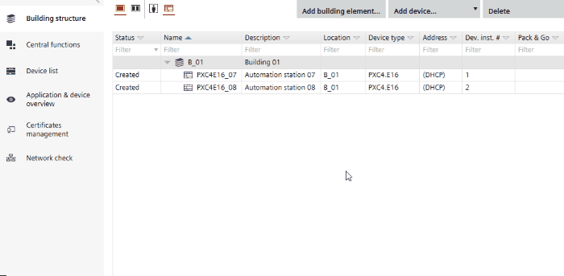
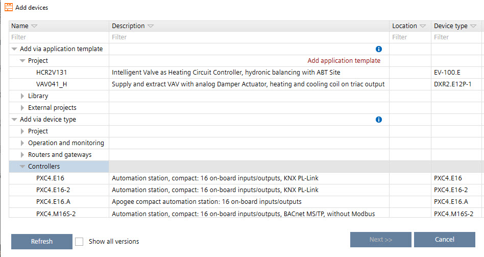

Adding devices
You can add the following devices in ABT Site.
- Devices, such as PXC4/5/7 or DXR2.. devices.
- Operating and monitoring devices, such as touch panels and web servers.
- Routers and gateways, such as bus interface modules.
You can copy an existing device by drag and drop.
Copying devices from another building element
You can copy devices from one project to another.
Copying devices from other projects
You can add multiple devices via smart copy and paste.
Adding multiple devices


The column Device version is hidden by default. To display the column Device version, select Show all versions at the bottom of the Add devices window.
Add devices
- A building structure is defined.
- Go to Building > Building structure.
- Right-click a building or building element and select Add devices.
- The Add devices dialog box opens.
Add devices (Dialog box) - In the Application templates table, select a device from the Device types list, for example, PXC4/5, PXC7 or PXG3.W200-2.

- Click Next.
- In the Number of new devices field, type the number of devices to be created.
- The table is updated automatically and shows the entered number of devices.
- Enter the details such as network address, equipment ID etc.
Add devices (Dialog box) - Click OK.
- The new devices are added to your project and to your building structure.
Note: No BACnet/SC configuration is adopted when a device is created or duplicated.
Add automation stations
- A building structure is defined.
Defining a building structure - There is at least one application template in your project or in your library to select. If there is no application template available, click Add application template in Building > Building structure.
Adding project-specific application templates
- Go to Building > Building structure.
- Right-click a building or building element and select Add devices.
- The Add devices dialog box opens.
Add devices (Dialog box) - Select an application template from the Application templates table.
- Click Next.
- In the Number of devices field, type the number of automation stations to be created.
- The table is updated automatically and shows the entered number of automation stations.
- Enter the details such as network address, equipment ID etc.
Add devices (Dialog box) - Click OK.
- The new automation stations are added to your project and to your building structure.
Note: No BACnet/SC configuration is adopted when a device is created or duplicated.